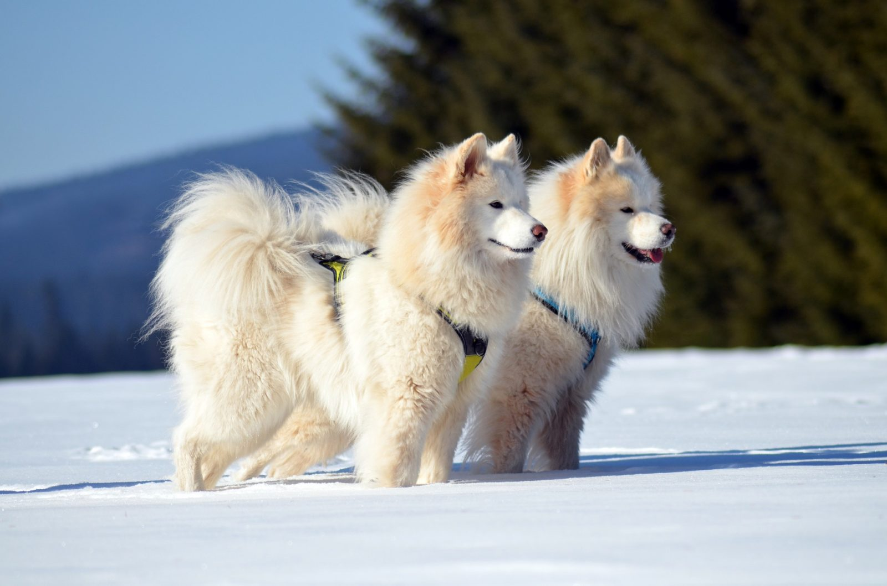

Välkommen!
Välkommen till Kennel Zyklonens hemsida om Samojed. Vår målsättning med avelsarbetet är att få fram kraftiga robusta hundar som orkar med att dra en pulka eller vagn, men även temperamentet är en mycket viktig bit. Samojeden är en social och energisk hundras som ursprungligen användes för att dra slädar och hjälpa människor i kalla klimat. Rasen är känd för sin tjocka vita päls, sitt vänliga uttryck och sin starka vilja att vara nära människor. Samojeder trivs ofta bäst när de får mycket motion, sällskap och mental stimulans. De är vanligtvis lekfulla och nyfikna och passar bra i aktiva familjer som tycker om att vara ute i naturen.

Samojeder är kända för att vara vänliga, sociala och ganska pratglada hundar. De tycker ofta om att vara med där saker händer och kan bli rastlösa om de lämnas ensamma för länge. Pälsen är tjock och kräver regelbunden borstning, särskilt under perioder då hunden fäller mycket. Trots sitt mjuka och fluffiga utseende är samojeden en stark och uthållig ras som behöver både fysisk aktivitet och mental stimulans. Rasen har ofta ett glatt uttryck som ibland kallas för ett “samojedleende”. Samojeder är vanligtvis nyfikna och intelligenta, men de kan också vara envisa och självständiga. Samojeden är en gammal hundras med ursprung i norra Ryssland och Sibirien, där den användes av samojediska folkgrupper som arbetshund. Hundarna hjälpte bland annat till med att dra slädar, vakta renar och hålla människor varma under kalla nätter. Den täta dubbelpälsen skyddar effektivt mot kyla och består av en mjuk underull och längre täckhår. Rasen är ofta mycket social och tycker om att vara nära både människor och andra hundar. Samojeder kan vara ganska självständiga och har ofta en stark egen vilja, vilket gör att träning behöver vara tydlig, konsekvent och varierad. De lär sig snabbt men kan tröttna om träningen blir för upprepande. Eftersom samojeden ursprungligen är en arbetande ras har den vanligtvis ett stort behov av aktivitet. Långa promenader, vandring, dragträning och olika former av problemlösning kan passa bra. Många samojeder uppskattar också att få använda nosen genom exempelvis sökövningar.